VSYNC 基础
在 Android 4.1 版本中，Google 提出了著名的 "Project Butter"，引入了 VSYNC（Vertical Synchronization），VSYNC 是一个垂直同步信号，用于协调显示刷新和绘图操作。VSYNC 信号的主要作用是控制屏幕刷新频率与图形渲染的同步，Vsync + TripleBuffer + Choreographer 一起工作，以确保画面显示平滑且没有掉帧和撕裂现象。
撕裂现象指的是正在渲染时传入新的图像，这时会导致屏幕上面部分绘制的上一帧图像，下面部分绘制的是下一帧图像导致画面撕裂的问题。也就是说用两帧的部分数据合成一帧。
如下图：
VSync 信号
VSync信号可以分为分类：
- 软件VSync信号（SW-VSync）：SW-VSync模型产生。
- 硬件VSync信号（HW-VSync）：负责对SW-VSync模型进行校准。
系统中分发的VSync信号是SW-VSync信号。SW-VSync信号的分发采用单次申请回调制，一次申请对应一次回调，不申请则没有回调。
我们通过 Perfetto 中观察到的 HW_VSYNC_displayid 就是 HW_VSYNC。HW_VSYNC_ON_displayid 表示 HW_VSYNC 是否打开。displayId在sf中标识这个显示屏的唯一字符串。
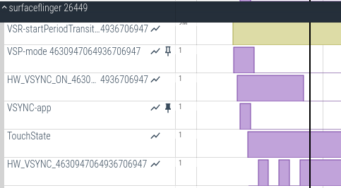
硬件VSYNC大部分时间是关闭的，只有在特殊场景下才会打开（比如更新SW VSYNC模型的时候）。
三种场景下会开启硬件VSync信号HW-VSync会对软件VSync信号SW-VSync进行校准。
- SurfaceFlinger初始化。
- 连续两次请求VSync-app信号的时间间隔超过750ms。
- SurfaceFlinger合成后，添加FenceTime到VSyncTracker中导致模型计算误差过大。
软件vsync是基于硬件vsync产生的计算模型产生，为什么不直接使用硬件vsync呢？
如果这样的话会让每个使用的App和Surfacefliner去直接监听硬件vsync会导致上层直接连接到硬件，这样的耦合性太高了，而且App和Surfacefliner去直接监听硬件vsync的话，会导致功耗增大。
vsync信号是固定周期的，用软件容易进行模拟。
SW-VSync 信号
App的绘制以及SF的合成分别由对应的软件VSYNC来驱动的。
SW-VSync信号的分类：
- app-vsync：控制 app上帧的vsync，触发app进行doframe，驱动 App 绘制。
- appsf-vsync: 一般控制 system_server 和某些 app（比如systemui）上帧的 vsync，触发app进行doframe， 和 app-vsync相位上有一定的偏差，使用较少。下面详细介绍。
- sf-vsync：控制 SurfaceFliner进行 Layer 合成的vsync。
这些 SW-VSync信号都是按需发射的，如果 App 需要更新界面，它就需要申请 VSYNC-app，如果没有App申请VSYNC-app，那么VSYNC-app将不再发射。同样，当App更新了界面，它会把对应的Graphic Buffer放到Buffer Queue中。Buffer Queue通知SF进行合成，此时SF会申请VSYNC-sf。如果SF不再申请VSYNC-sf，VSYNC-sf将不再发射。
意味着，如果App要持续不断的更新，它就得不断去申请VSYNC-app；而对SF来说，只要有合成任务，它就得再去申请VSYNC-sf。
VSYNC-app与VSYNC-sf是相互独立的。VSYNC-app触发App的绘制，Vsync-sf触发SF合成。App绘制与SF合成都会加大CPU的负载，为了避免绘制与合成打架造成的性能问题，VSYNC-app可以与VSYNC-sf稍微错开一下。
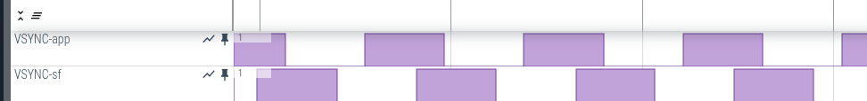
在上图中，VSYNC脉冲的上升沿和下降沿都表示一次VSYNC信号。
SF进行合成的是App的上一帧，而App当前正在绘制的那一帧，要等到下一个VSYNC-sf来临时再进行合成。
Vsync Phase
一文带你看懂Vsync Phase 深入研究源码：DispSync详解 DispSync
Vsync Phase就是指app vsync，sf vsync和hw vsync之间的相位差。
具体可以通过 dumpsys SurfaceFlinger 来查看：
app phase: 1000000 ns SF phase: 1000000 ns
app duration: 16666666 ns SF duration: 15666666 ns
early app phase: 1000000 ns early SF phase: 1000000 ns
early app duration: 16666666 ns early SF duration: 15666666 ns
GL early app phase: 1000000 ns GL early SF phase: 1000000 ns
GL early app duration: 16666666 ns GL early SF duration: 15666666 ns
HWC min duration: 0 ns
present offset: 0 ns VSYNC period: 16666666 ns
app phase 和 SF phase 指的是 app 和 sf 的相位。
hw vsync是硬件产生的。
app vsync是基于hw vsync加上一个相位差app phase软件产生的。
sf vsync是基于hw vsync加上一个相位差sf phase软件产生的。
app phase 和SF phase 就是正常情况下使用的。
early app phase 和 early SF phase 是在切换屏幕帧率的时候使用的。
GL early app phase 和 GL early SF phase 是在SF使用GPU合成的时候使用的。
开启相位差的功能
[debug.sf.use_phase_offsets_as_durations]: [1]
调整相位差
调整这6个属性值来调整三组对应的6个相位差：
[debug.sf.late.app.duration]: [20500000]
[debug.sf.late.sf.duration]: [10500000]
[debug.sf.early.app.duration]: [16500000]
[debug.sf.early.sf.duration]: [16000000]
[debug.sf.earlyGl.app.duration]: [21000000]
[debug.sf.earlyGl.sf.duration]: [13500000]
属性值和相位差的关系
//vsyncDuration对应vsync周期，60hz手机就是16666666ns
//sfDuration就是对应sf.duration
nsecs_t sfDurationToOffset(std::chrono::nanoseconds sfDuration, nsecs_t vsyncDuration) {
return vsyncDuration - sfDuration.count() % vsyncDuration;
}
//vsyncDuration对应vsync周期，60hz手机就是16666666（纳秒）
//sfDuration就是对应sf.duration
//appDuration就是对应app.duration
nsecs_t appDurationToOffset(std::chrono::nanoseconds appDuration,
std::chrono::nanoseconds sfDuration, nsecs_t vsyncDuration) {
return vsyncDuration - (appDuration + sfDuration).count() % vsyncDuration;
}
简单计算一下app phase和SF phase：
因为手机是60hz的屏幕，vsyncDuration ：16666667
appDuration ：[debug.sf.late.app.duration]: [20500000]
sfDuration ：[debug.sf.late.sf.duration]: [10500000]
app phase计算
16666667 - (20500000 + 10500000) % 16666667 = 2333334
sf phase计算
16666667 - 10500000 % 16666667 = 6166667
修改之后可以用这个公式计算后和 dumpsys 出来的数据做个对比。
调整相位差的好处
如果要知道调整相位差的好处，就要知道三个vsync分别代表什么。
app vsync代表软件开始绘制。
sf vsync代表sf开始合成。
hw vsync代表画面开始输出给屏幕。
假如没有相位差，从app开始绘制到显示到屏幕需要3个vsync周期左右。
如果修改了sf的相位差，可以让app开始绘制到显示到屏幕的时间小于3个vsync周期。但是前提是app绘制要足够快，sf合成要足够快，这样子就提升了跟手性。
但是这个修改也量力而行，如果简单粗暴的按图改，万一app绘制超时了，或者sf合成超时了，反而就是副作用了，会引发一系列的丢帧，buffer堆积的问题，最后就是越改越差。
另外一个问题是可以改善app绘制超时带来的丢帧问题。
如果没有相位差，因为app绘制超时了，app绘制到屏幕显示可能需要4帧。适度的通过调整相位差，会减少丢帧问题。
appsf-vsync 信号
这里着重介绍一下 appsf-vsync，因为在早期的Android版本中，是没有这个类型的VSync信号的。我们先看看Google在添加这个类型的VSync信号时代码中添加的注释：
SurfaceFlinger: decouple EventThread from SF wakeup
Today we have two instances of EventThread:
1. 'app' - used to wake up Choreographer clients
2. 'sf' - used to wake up SF mian thead *and*
Choreographer clients that uses sf instance
Now this creates an ambiguity when trying to reason about the expected
vsync time and deadline of 'sf' EventThread:
- SF wakes up sfWorkDuration before a vsync and targets that vsync
- Choreographer users wakes up with SF main thread but targets the
vsync that happens after the next SF wakeup.
To resolve this ambiguity we are decoupling SF wakeup from 'sf'
EventThread. This means that Choreographer clients that uses 'sf'
instance will keep using the EventThread but SF will be waking up
directly by a callback with VSyncDispatch. This allows us to correct
the expected vsync and deadline for both.
Test: Interacting with the device and observe systraces
Test: new unit test added to SF suite
Bug: 166302754
Change-Id: I76d154029b4bc1902198074c33d38ff030c4601b
翻译：
SurfaceFlinger：将 EventThread 与 SF 唤醒解耦
如今我们有两个 EventThread 实例：
“app” - 用于唤醒 Choreographer 客户端
“sf” - 用于唤醒 SF 主线程以及使用 sf 实例的 Choreographer 客户端
现在，在试图推断 “sf” EventThread 的预期垂直同步时间和截止日期时，这会产生歧义：
SF 在垂直同步前 sfWorkDuration 唤醒并以该垂直同步为目标
Choreographer 用户与 SF 主线程一起唤醒，但以 SF 下次唤醒后发生的垂直同步为目标。
为了解决这种歧义，我们正在将 SF 唤醒与 “sf” EventThread 解耦。这意味着使用 “sf” 实例的 Choreographer 客户端将继续使用 EventThread，但 SF 将通过 VSyncDispatch 的回调直接唤醒。这使我们能够为两者更正预期的垂直同步和截止日期。
也就是说，以前有两个 EventThread 实例，一个应用唤醒 Choreographer 客户端，一个用于唤醒 sf 自己主线程以及使用 sf vsync 的Choreographer客户端，现在为了解耦，要把 sf 这个 EventThread 实例进行拆分，唤醒 sf 自己主线程的 vsync 的部分移到 VSyncDispatch 直接进行，另外使用 sf vsync 的 Choreographer 客户端的仍然留在 EventThread 中处理，把这部分修改成 appsf，这就是 appsf-vsync 的由来。
那么大家可能会有个疑问，app 不是给客户端提供 vsync 信号的吗？为什么 sf 也会给客户端提供 vsync 信号呢？
我们来看Choreographer的构造方法：
private Choreographer(Looper looper, int vsyncSource, long layerHandle) {
mLooper = looper;
mHandler = new FrameHandler(looper);
mDisplayEventReceiver = USE_VSYNC
? new FrameDisplayEventReceiver(looper, vsyncSource, layerHandle)
: null;
有个参数 vsyncSource，这个参数又用来构造 FrameDisplayEventReceiver，在其父类中有对这个参数做解释：
/**
* Creates a display event receiver.
*
* @param looper The looper to use when invoking callbacks.
* @param vsyncSource The source of the vsync tick. Must be on of the VSYNC_SOURCE_* values.
* @param eventRegistration Which events to dispatch. Must be a bitfield consist of the
* EVENT_REGISTRATION_*_FLAG values.
* @param layerHandle Layer to which the current instance is attached to
*/
public DisplayEventReceiver(Looper looper, int vsyncSource, int eventRegistration,
long layerHandle) {
if (looper == null) {
throw new IllegalArgumentException("looper must not be null");
}
垂直同步时钟周期的来源。必须是 VSYNC_SOURCE_* 值之一。
它对应的值是：
// DisplayEventReceiver
/**
* When retrieving vsync events, this specifies that the vsync event should happen at the normal
* vsync-app tick.
* <p>
* Keep in sync with frameworks/native/libs/gui/aidl/android/gui/ISurfaceComposer.aidl
*/
public static final int VSYNC_SOURCE_APP = 0;
/**
* When retrieving vsync events, this specifies that the vsync event should happen whenever
* Surface Flinger is processing a frame.
* <p>
* Keep in sync with frameworks/native/libs/gui/aidl/android/gui/ISurfaceComposer.aidl
*/
public static final int VSYNC_SOURCE_SURFACE_FLINGER = 1;
一个是常见的 app source，另外一个就是 sf source，也就是说，app客户端是可以指定跟随使用 sf 的 vsync 信号的，具体有谁使用呢，我们可以在代码里面查看一下，
/**
* @hide
*/
@UnsupportedAppUsage
public static Choreographer getSfInstance() {
return sSfThreadInstance.get();
}
// Thread local storage for the SF choreographer.
private static final ThreadLocal<Choreographer> sSfThreadInstance =
new ThreadLocal<Choreographer>() {
@Override
protected Choreographer initialValue() {
Looper looper = Looper.myLooper();
if (looper == null) {
throw new IllegalStateException("The current thread must have a looper!");
}
return new Choreographer(looper, VSYNC_SOURCE_SURFACE_FLINGER);
}
};
使用 getSfInstance() 的地方还是蛮多的，比如 systemui 中，SurfaceAnimationRunner 中，WindowAnimator中等。
SurfaceAnimationRunner(@Nullable AnimationFrameCallbackProvider callbackProvider,
AnimatorFactory animatorFactory, Transaction frameTransaction,
PowerManagerInternal powerManagerInternal) {
mSurfaceAnimationHandler.runWithScissors(() -> mChoreographer = getSfInstance(),
0 /* timeout */);
WindowAnimator(final WindowManagerService service) {
mService = service;
mContext = service.mContext;
mPolicy = service.mPolicy;
mTransaction = service.mTransactionFactory.get();
service.mAnimationHandler.runWithScissors(
() -> mChoreographer = Choreographer.getSfInstance(), 0 /* timeout */);
SW-VSync 信号模型
下面开始介绍 SW-VSync 信号是如何产生和校准的。
HW-VSync 的开启
HW-VSync的开启的时机有如下情况：
- SurfaceFlinger初始化。
- 连续两次请求VSync-app信号的时间间隔超过750ms。
- SurfaceFlinger合成后，将 buffer 提交给 HWC HAL 显示时，会从 HWC HAL 返回一个 PresentFence，PresentFence 的 SignalTime 实际就是一个 HW-VSync 信号。SF 在合成完成以后，会去获取上一次的 PresentFence 的 SignalTime，并将其加入到模型中，如果偏差过大，则进行校准。
如何校准：
远程调用到 HWC HAL，打开硬件 Vsync 开关，接受新的硬件 Vsync 数据，重新计算模型。
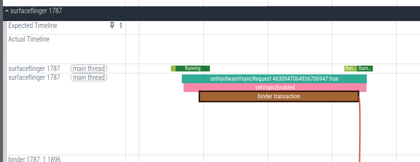
调用到 vendor.qti.hardware.display.composer-service 进程：
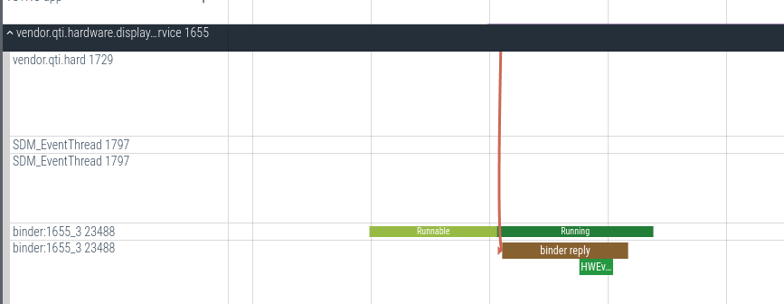
1.SurfaceFlinger初始化开启：
SurfaceFlinger::initScheduler
SurfaceFlinger::setVsyncEnabled
SurfaceFlinger::setHWCVsyncEnabled
HWComposer::setVsyncEnabled
2.请求VSync-app信号时开启：
void Scheduler::resync() {
static constexpr nsecs_t kIgnoreDelay = ms2ns(750);
const nsecs_t now = systemTime();
const nsecs_t last = mLastResyncTime.exchange(now);
if (now - last > kIgnoreDelay) {
resyncAllToHardwareVsync(false /* allowToEnable */);
}
}
在Scheduler的resync方法中，会判断连续两次开启硬件VSync信号的时间间隔是否小于750ms，如果小于，则调用resyncAllToHardwareVsync方法开启硬件VSync信号。
Scheduler::resync()
Scheduler::resyncAllToHardwareVsync
//遍历所有的屏幕设备，并调用方法
Scheduler::resyncToHardwareVsyncLocked
VsyncSchedule::startPeriodTransition
// 通知VSyncController更新VSync周期
VSyncReactor.startPeriodTransition()
//开启硬件VSync信号
VsyncSchedule::enableHardwareVsyncLocked
VSyncPredictor.resetModel()
// 通知SurfaceFlinger开启硬件VSync信号。
SurfaceFlinger::setVsyncEnabled
SurfaceFlinger::setHWCVsyncEnabled
HWComposer::setVsyncEnabled
3.添加FenceTime时开启HW-VSync信号
Fence时间是Fence创建时刻的时间戳，由于Fence创建时刻的时间戳比采样HW-VSync信号的时间戳更接近HW-VSync信号实际发出的时间，因此在SurfaceFlinger调用composite方法进行合成时，会对Fence时间进行采样。
SurfaceFlinger::composite
SurfaceFlinger::postComposition
Scheduler::addPresentFence
// 参与软件VSync模型的计算
// 根据返回结果决定是否开启硬件VSync信号
// (此时可能开启了HW-VSync信号，也可能没有开启)
// 如果计算后得到的误差过大，会重新开启HW-VSync。
VSyncReactor.addPresentFence
VSyncPredictor::addVsyncTimestamp
// 开启HW-VSync信号，和上面流程一样，不再介绍
VsyncSchedule.enableHardwareVsync
// 关闭 HW-VSync信号
VsyncSchedule.disableHardwareVsync
SW-VSync信号的校准
这个校准过程其实就是 HWVsync 计算模型的建立的过程。
下面开始介绍开启采样后的 HW-VSync 回调流程。
在 SurfaceFlinger::setVsyncEnabled 中调用 setHWCVsyncEnabled 开启 HW-VSync，在 Trace 中可以看到 `HW_VSYNC_ON*为 1，然后HWVSYNC` 有6个上升沿和下降沿，进行了6个周期的采样。
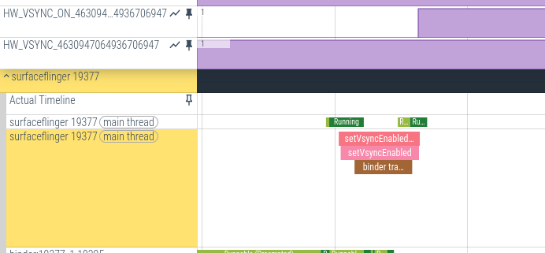
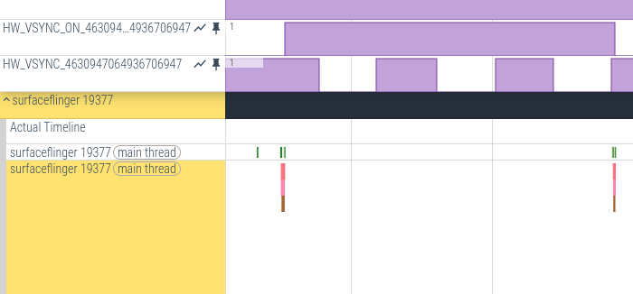
1.在开启HW-VSync信号后，HWComposer会回调SurfaceFlinger的 onComposerHalVsync 方法接收不少于6个 HW-VSync 信号到达的时间数据。
2.以 HW_Vsync 信号到达的次序为 X 轴，实际计算中，次序是根据信号到达时间与首个信号到达时间的差值除以周期计算出的（实际代码还考虑了数据可能存在的误差做了一些额外处理），次序的计算结果还乘以了一个固定的倍数做了放大处理。以 HW_Vsync 信号的到达时间做 Y 轴。通过简单线性回归公式计算出 X 与 Y 的一个线性关系 y = ax + b。
3.有了这个模型，给出任意一个时间，将该时间套入公式中的 y = ax + b 中的 y，计算出 x，x 再加 1，就是该时间点的下一个 HW-Vsync 信号对应的次序，再将该次序代入 y = ax + b 的 x 中，就能计算出下一个 HW-Sync 信号的到达时间 c 。在实际代码中为了保证准确性，计算出的结果 c，减去半个周期即 c - slope/2，会代入上述流程再计算一次。
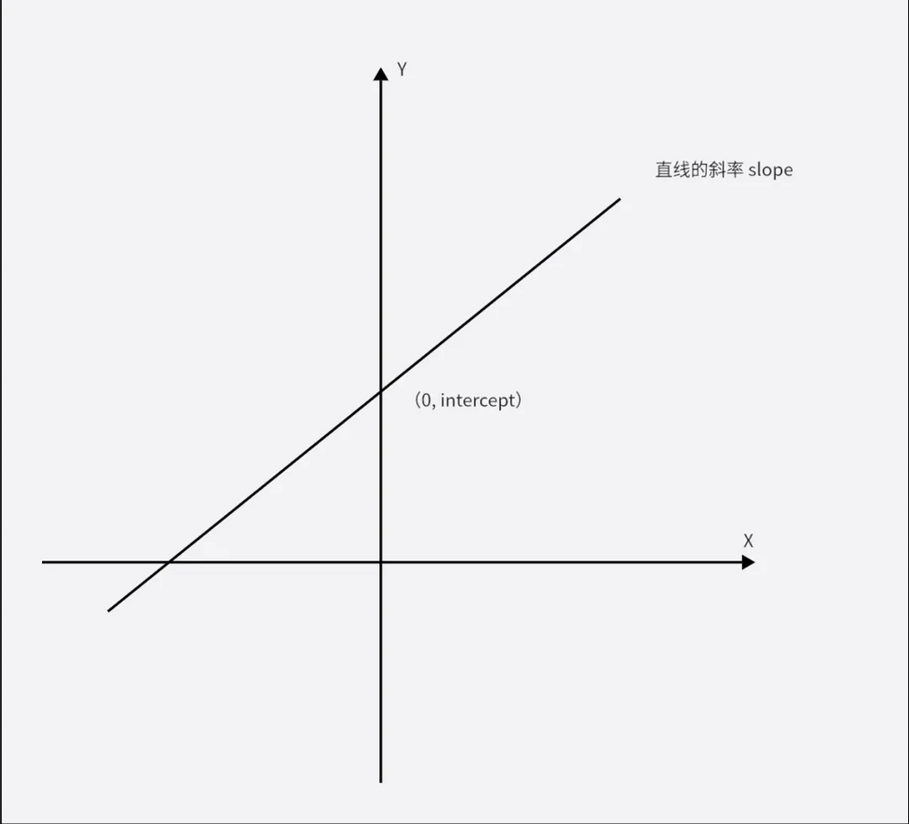
具体代码流程和逻辑如下：
SurfaceFlinger::onComposerHalVsync
// 添加硬件VSync信号的时间戳作为采样。
VsyncSchedule::addResyncSample
// 把硬件VSYNC的时间戳信息添加到VsyncTracker中
VSyncReactor::addHwVsyncTimestamp
VSyncPredictor::addVsyncTimestamp
// 判断要不要更多的样本，这边默认是6个样本，
// 所以如果样本个数还没有达到，是需要一直增加样本到6个。
VSyncPredictor::needsMoreSamples()
// 如果还需要采集样本，就需要继续上报
VsyncSchedule::enableHardwareVsync
VsyncSchedule::enableHardwareVsyncLocked
VSyncPredictor.resetModel()
// 需要继续开启HwVsync开关
SurfaceFlinger::setVsyncEnabled
SurfaceFlinger::setHWCVsyncEnabled
HWComposer::setVsyncEnabled
// 如果样本已经足够了，就关闭HW SYNC的硬件上报开关
VsyncSchedule::disableHardwareVsync
void SurfaceFlinger::onComposerHalVsync(hal::HWDisplayId hwcDisplayId, int64_t timestamp,
std::optional<hal::VsyncPeriodNanos> vsyncPeriod) {
ATRACE_NAME(vsyncPeriod
? ftl::Concat(__func__, ' ', hwcDisplayId, ' ', *vsyncPeriod, "ns").c_str()
: ftl::Concat(__func__, ' ', hwcDisplayId).c_str());
我们可以通过 onComposerHalVsync 中添加的 Trace 信息来在 Perfetto 上跟踪调用情况。
可以看到，每个 HW-VSync 电平变化就伴随着一次 onComposerHalVsync 回调。
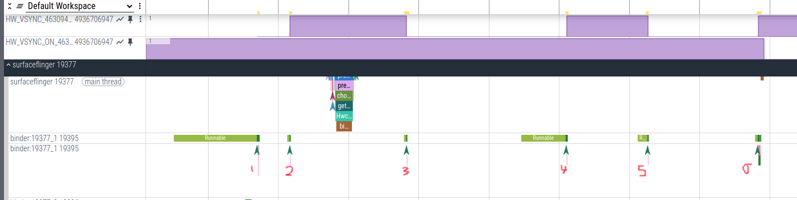
校准的逻辑主要在 VSyncPredictor的addVsyncTimestamp方法。
bool VSyncPredictor::addVsyncTimestamp(nsecs_t timestamp) {
std::lock_guard lock(mMutex);
if (!validate(timestamp)) {
// VSR could elect to ignore the incongruent timestamp or resetModel(). If ts is ignored,
// don't insert this ts into mTimestamps ringbuffer. If we are still
// in the learning phase we should just clear all timestamps and start
// over.
if (mTimestamps.size() < kMinimumSamplesForPrediction) {
// Add the timestamp to mTimestamps before clearing it so we could
// update mKnownTimestamp based on the new timestamp.
mTimestamps.push_back(timestamp);
clearTimestamps();
} else if (!mTimestamps.empty()) {
mKnownTimestamp =
std::max(timestamp, *std::max_element(mTimestamps.begin(), mTimestamps.end()));
} else {
mKnownTimestamp = timestamp;
}
return false;
}
if (mTimestamps.size() != kHistorySize) {
mTimestamps.push_back(timestamp);
mLastTimestampIndex = next(mLastTimestampIndex);
} else {
mLastTimestampIndex = next(mLastTimestampIndex);
mTimestamps[mLastTimestampIndex] = timestamp;
}
traceInt64If("VSP-ts", timestamp);
const size_t numSamples = mTimestamps.size();
if (numSamples < kMinimumSamplesForPrediction) {
mRateMap[mIdealPeriod] = {mIdealPeriod, 0};
return true;
}
// This is a 'simple linear regression' calculation of Y over X, with Y being the
// vsync timestamps, and X being the ordinal of vsync count.
// The calculated slope is the vsync period.
// Formula for reference:
// Sigma_i: means sum over all timestamps.
// mean(variable): statistical mean of variable.
// X: snapped ordinal of the timestamp
// Y: vsync timestamp
//
// Sigma_i( (X_i - mean(X)) * (Y_i - mean(Y) )
// slope = -------------------------------------------
// Sigma_i ( X_i - mean(X) ) ^ 2
//
// intercept = mean(Y) - slope * mean(X)
//
std::vector<nsecs_t> vsyncTS(numSamples);
std::vector<nsecs_t> ordinals(numSamples);
// Normalizing to the oldest timestamp cuts down on error in calculating the intercept.
const auto oldestTS = *std::min_element(mTimestamps.begin(), mTimestamps.end());
auto it = mRateMap.find(mIdealPeriod);
auto const currentPeriod = it->second.slope;
// The mean of the ordinals must be precise for the intercept calculation, so scale them up for
// fixed-point arithmetic.
constexpr int64_t kScalingFactor = 1000;
nsecs_t meanTS = 0;
nsecs_t meanOrdinal = 0;
for (size_t i = 0; i < numSamples; i++) {
const auto timestamp = mTimestamps[i] - oldestTS;
vsyncTS[i] = timestamp;
meanTS += timestamp;
const auto ordinal = currentPeriod == 0
? 0
: (vsyncTS[i] + currentPeriod / 2) / currentPeriod * kScalingFactor;
ordinals[i] = ordinal;
meanOrdinal += ordinal;
}
meanTS /= numSamples;
meanOrdinal /= numSamples;
for (size_t i = 0; i < numSamples; i++) {
vsyncTS[i] -= meanTS;
ordinals[i] -= meanOrdinal;
}
nsecs_t top = 0;
nsecs_t bottom = 0;
for (size_t i = 0; i < numSamples; i++) {
top += vsyncTS[i] * ordinals[i];
bottom += ordinals[i] * ordinals[i];
}
if (CC_UNLIKELY(bottom == 0)) {
it->second = {mIdealPeriod, 0};
clearTimestamps();
return false;
}
nsecs_t const anticipatedPeriod = top * kScalingFactor / bottom;
nsecs_t const intercept = meanTS - (anticipatedPeriod * meanOrdinal / kScalingFactor);
auto const percent = std::abs(anticipatedPeriod - mIdealPeriod) * kMaxPercent / mIdealPeriod;
if (percent >= kOutlierTolerancePercent) {
it->second = {mIdealPeriod, 0};
clearTimestamps();
return false;
}
traceInt64If("VSP-period", anticipatedPeriod);
traceInt64If("VSP-intercept", intercept);
it->second = {anticipatedPeriod, intercept};
ALOGV("model update ts %" PRIu64 ": %" PRId64 " slope: %" PRId64 " intercept: %" PRId64,
mId.value, timestamp, anticipatedPeriod, intercept);
return true;
}
具体的，通过最小二乘法得到一条y=bx+a的拟合曲线。其中，b称为回归系数，a称为截距。SW-VSync 模型核心就是这两个参数。
SW-Vsync信号的计算
App 渲染使用的是一个软件周期信号 Vsync-app，SurfaceFlinger 合成图层使用的一个软件周期信号 Vsync-sf。这个两个信号都是基于 HW-Vsync 信号计算出的，与 HW-Vsync 同频率，但保持了一定的相位差。
接下来以 Vsync-app 为例，分析软件 Vsync 信号的计算过程。
软件 Vsync 信号的几个重要参数：
- app duration：app 开始绘制一块 buffer 到 sf 开始消费这块 buffer 的时长（Vsync-app 与对应 Vsync-sf 的间隔，即相位差）；
- sf duration：sf 开始合成一块 buffer 到这块 buffer 开始上屏的时长（vsync-sf 到 HW-Vsync 的间隔，即相位差）；
- app phase: VSync-app 与 HW_Vsync 的相位差；
- sf phase：VSync-sf 与 HW_Vsync 的相位差。
这些参数都定义在手机的属性变量中，在开机 SurfaceFligner 初始化时，被加载进内存中。从定义就容易看出，duration 和 phase 是可以相互转换的。
通过 adb shell dumpsys SurfaceFlinger --vsync 也可以看到他们的具体数值。
VsyncDispatch:
Timer:
DebugState: Waiting
mTimerSlack: 0.50ms mMinVsyncDistance: 3.00ms
mIntendedWakeupTime: 3.68ms from now
mLastTimerCallback: 12.80ms ago mLastTimerSchedule: 12.27ms ago
Callbacks:
appSf:
workDuration: 16.67ms readyDuration: 15.67ms earliestVsync: -12553.88ms relative to now
mLastDispatchTime: 12537.25ms ago
sf: [wake up in 3.71ms deadline in 19.38ms for vsync 19.38ms from now]
workDuration: 15.67ms readyDuration: 0.00ms earliestVsync: 2.74ms relative to now
mLastDispatchTime: -2.74ms ago
app: [wake up in 3.67ms deadline in 20.34ms for vsync 36.00ms from now]
workDuration: 16.67ms readyDuration: 15.67ms earliestVsync: 19.37ms relative to now
mLastDispatchTime: -19.37ms ago
- workduration：代表自身工作的理论耗时
- readyduration：代表自身工作完成后，传递给下一模块处理的等待时间
以sf和app举例：app的workduration代表app绘制渲染一帧的理论耗时，app的readyduration代表app绘制渲染一帧完成后交给surfaceflinger处理的理论耗时，sf的workduration代表sf处理这一帧的理论耗时，readyduration代表传递给下一模块处理的等待时间。
可见 app的readyduration== sf的 workduration，且sf的readyduration=0
App是可能在任意时间向 sf 申请 Vsync-app 的，而 sf 也不是立即会将信号发出，而是通过一定的计算模型来统一计算然后周期性的发出 Vsync-app 信号。下面举例来说明 Vsync-app 信号的计算过程。
app-sync：workduration：16.6ms readyduration: 15.6ms，那么 app-sync 的计算方式如下图所描述：
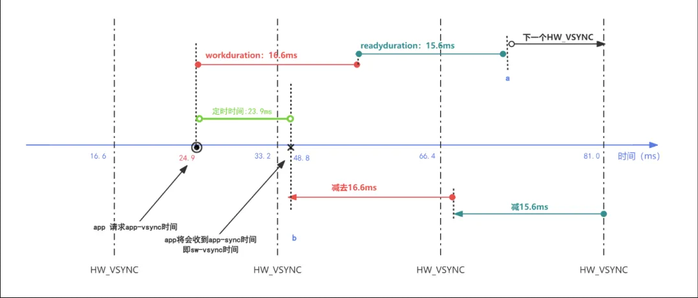
- 假如应用在 24.9ms 时向 surfaceflinger 申请 app-vsync 信号。
- 在 24.9ms 基础上加上 app-vsync 的 workduration 和 readyduration 计算出时间点 a。
- 找出 a 的下一个 HW_VSync 的时间点：81ms，这里就会使用到计算模型 y = ax + b。a 点时间与最早的 HW-Vsync 信号的时间差除以周期再加上 1，做放大处理后，就是下一个 HW-Vsync 信号的次序，代入计算模型即可计算出下一个 HW_Vsync 信号到达的时间。
- 在 a 的的下一个 HW_VSYNC 的时间点上减去 app-vsync 的 workduration 和 readyduration 得到时间点 b: 48.8ms，该时间点就是未来 app 收到 app-vsync 的时间点。
- 计算出surfaceflinger申请app-vsync信号的到时间点b的时间差：23.9ms，并设置定时器。
- 23.9m 后 app 申请的a pp-vsync 时间到，surfaceflinger向app发送app-vsync信号。
以上演示的是以 app-vsync 为例的 vsync 计算过程，appsf-vsync 和 sf-vsync 的计算过程类似，不同的是 appsf-vsync 和sf-vsync 的 workduration，readyduration 是不同的值，以使得信号之间保持一定的相位差。
void EventThread::threadMain(std::unique_lock<std::mutex>& lock) {
......
if (mState == State::VSync) {
const auto scheduleResult =
mVsyncRegistration.schedule({.workDuration = mWorkDuration.get().count(),
.readyDuration = mReadyDuration.count(),
.lastVsync = mLastVsyncCallbackTime.ns()});
LOG_ALWAYS_FATAL_IF(!scheduleResult, "Error scheduling callback");
} else {
mVsyncRegistration.cancel();
}
Vsync框架
相关类
- Schdueler：负责SurfaceFlinger中VSync信号的注册与分发。
- VsyncSchedule：Scheduler功能实现的核心。保存了 VsyncController、VSyncTracker和VSyncDispatch 对象。
- VSyncTracker：实现类为 VSyncPredictor，负责接收外部 HW-Vsync 采样，建立软件 Vsync 模型，计算软件VSync模型的参数。
- VsyncController：实现类为 VSyncReactor，负责约束管理VSyncTracker的行为，控制VSyncTracker的采样，负责传递 HWVsync，presentFence 信号。
- VSyncDispatch：实现类为 VSyncDispatchTimerQueue，负责软件VSync信号的产生和分发。
- EventThreadConnection：app会向surfaceflinger建立连接，该连接就是EventThreadConnection，连接建立后会把该连接保存在EventThread的mDisplayEventConnections列表中。
- EventThread：SurfaceFlinger 创建了两个子线程（EventThread）用来分别向客户端派app-vsync事件和appsf-vsync事件，下面会详细介绍。
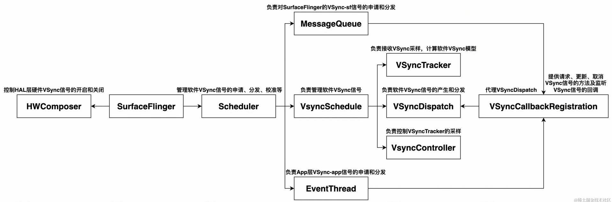
EventThread主要作用：
- 处理app端建立连接的请求，建立过程中会保存连接信息，并生成一个socktpair并返回给app端，后续的vsync信号将会通过该socktpair发送给app
- 接收app申请vsync的请求，并向对应的vsync信号软件模型进行申请
- 当vsync信号到达时，分发vsync信号给有需求的app
在EventThread的初始化过程中会，会启动一个线程，在该线程中会执行EventThread::threaMain(),该函数是会执行一个while大循环，该循环的运行受状态机控制：
//EventThread.h
enum class State {
Idle,//循环会阻塞，此时表示当前处于空闲状态，等待app建立连接或请求Vsync信号后唤醒循环
Quit,//循环将会退出
SyntheticVSync,//表示此时应该伪造 Vsync，比如显示器关闭时
VSync,//表示正常亮屏时请求，分发 Vsync 信号
};
EventThreadConnection 中有个变量 vsyncRequest ，类型为VSyncRequest ：
//EventThread.h
enum class VSyncRequest {
None = -2, // 不请求
// Single wakes up for the next two frames to avoid scheduler overhead
Single = -1, //该状态下会得到两次vsync回调
// SingleSuppressCallback only wakes up for the next frame
SingleSuppressCallback = 0, //该状态下会得到一次vsync回调
Periodic = 1, //亮屏下不使用该状态
// Subsequent values are periods.
};
VSyncRequest 对应着 VSync 信号的申请状态，对 VSync 的连续申请以及按需申请的保证起到关键作用。
相关线程
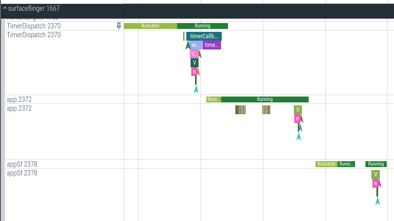
- TimerDispatch 线程：TimerDispatch充当软件VSYNC的信号泵，这个线程包装成VsyncDispatchTimeQueue这个类，里面有一个CallbackMap变量，存放的是那些关心VSYNC信号的人（appEventThread, appSfEventThread, sf的MessageQueue），TimerDispatch就是根据模型计算的唤醒时间对着它们发送SW VSYNC。
- appEventThread线程：它是EventThread类型的实例，它是VSYNC-app寄宿的线程。很明显，它就是 VSYNC-app 的掌门人。一方面，它接收App对VSYNC-app的请求，如果没有App请求VSYNC-app，它就进入休眠；另一方面，它接收 TimerDispatch 发射过来 VSYNC-app，控制App的绘制。
- appSfEventThread 线程：它是 EventThread 类型的实例，它是 VSYNC-appSf 寄宿的线程，和 appEventThread 线程功能是类似的，用于调试代码，暂时忽略。
- MessageQueue（表示主线程）： 它是 VSYNC-sf 寄宿的线程，很明显，它就是 VSYNC-sf 的掌门人，不过它专给 SF 一个人服务。一方面，如果 SF 有合成需求，会向它提出申请；另一方面，它接收 TimerDispatch 发射过来的 VSYNC-sf，控制 SF 的合成。
线程初始化
app、appSf和sf 信号线程的初始化和绑定。
SurfaceFlinger::initScheduler
Scheduler::createEventThread
Scheduler::createEventThread
EventThread::EventThread
MessageQueue::initVsync
MessageQueue::onNewVsyncScheduleLocked
- 创建Schdueler，Schdueler负责SurfaceFlinger中VSync信号的注册与分发。ISchedulerCallback用于SurfaceFlinger监听Schdueler的状态。ICompositor用于Schdueler调用SurfaceFlingerLayer合成相关的功能。
- 初始化 app、appSf分发线程
- 初始化MessageQueue，MessageQueue用于SurfaceFlinger注册监听VSync-sf信号。
void SurfaceFlinger::initScheduler(const sp<const DisplayDevice>& display) {
// 创建Schdueler
mScheduler = std::make_unique<Scheduler>(static_cast<ICompositor&>(*this),
static_cast<ISchedulerCallback&>(*this), features,
std::move(modulatorPtr));
mScheduler->registerDisplay(display->getPhysicalId(), display->holdRefreshRateSelector());
setVsyncEnabled(display->getPhysicalId(), false);
mScheduler->startTimers();
...
//初始化 app、appSf和sf
mAppConnectionHandle =
mScheduler->createEventThread(Scheduler::Cycle::Render,
mFrameTimeline->getTokenManager(),
/* workDuration */ configs.late.appWorkDuration,
/* readyDuration */ configs.late.sfWorkDuration);
mSfConnectionHandle =
mScheduler->createEventThread(Scheduler::Cycle::LastComposite,
mFrameTimeline->getTokenManager(),
/* workDuration */ activeRefreshRate.getPeriod(),
/* readyDuration */ configs.late.sfWorkDuration);
mScheduler->initVsync(mScheduler->getVsyncSchedule()->getDispatch(),
*mFrameTimeline->getTokenManager(), configs.late.sfWorkDuration);
...
}
在 Scheduler::createEventThread 方法中根据 Cycle 类型来判断是创建 app 还是 appSf 线程。
ConnectionHandle Scheduler::createEventThread(Cycle cycle,
frametimeline::TokenManager* tokenManager,
std::chrono::nanoseconds workDuration,
std::chrono::nanoseconds readyDuration) {
auto eventThread = std::make_unique<impl::EventThread>(cycle == Cycle::Render ? "app" : "appSf",
getVsyncSchedule(), tokenManager,
makeThrottleVsyncCallback(),
makeGetVsyncPeriodFunction(),
workDuration, readyDuration);
auto& handle = cycle == Cycle::Render ? mAppConnectionHandle : mSfConnectionHandle;
handle = createConnection(std::move(eventThread));
return handle;
}
在EventThread在创建 VSyncCallbackRegistration 时，绑定了 EventThread::onVsync 方法，所以后面有 Vsync 信号来的时候会调用到这个方法。
EventThread::EventThread(const char* name, std::shared_ptr<scheduler::VsyncSchedule> vsyncSchedule,
android::frametimeline::TokenManager* tokenManager,
IEventThreadCallback& callback, std::chrono::nanoseconds workDuration,
std::chrono::nanoseconds readyDuration)
: mThreadName(name),
mVsyncTracer(base::StringPrintf("VSYNC-%s", name), 0),
mWorkDuration(base::StringPrintf("VsyncWorkDuration-%s", name), workDuration),
mReadyDuration(readyDuration),
mVsyncSchedule(std::move(vsyncSchedule)),
mVsyncRegistration(mVsyncSchedule->getDispatch(), createDispatchCallback(), name),
scheduler::VSyncDispatch::Callback EventThread::createDispatchCallback() {
return [this](nsecs_t vsyncTime, nsecs_t wakeupTime, nsecs_t readyTime) {
onVsync(vsyncTime, wakeupTime, readyTime);
};
}
MessageQueue::initVsync 方法调用到 onNewVsyncScheduleLocked，绑定一个回调函数 MessageQueue::vsyncCallback 到 VsyncDispatch 上面，回调名字是"sf"。
std::unique_ptr<scheduler::VSyncCallbackRegistration> MessageQueue::onNewVsyncScheduleLocked(
std::shared_ptr<scheduler::VSyncDispatch> dispatch) {
const bool reschedule = mVsync.registration &&
mVsync.registration->cancel() == scheduler::CancelResult::Cancelled;
auto oldRegistration = std::move(mVsync.registration);
// 初始化 mVsync.registration 后面介绍这个 VSyncCallbackRegistration 类
mVsync.registration = std::make_unique<
scheduler::VSyncCallbackRegistration>(std::move(dispatch),
std::bind(&MessageQueue::vsyncCallback, this,
std::placeholders::_1,
std::placeholders::_2,
std::placeholders::_3),
"sf");
if (reschedule) {
我们知道VsyncDispatch是节拍器（心跳），也就是TimerDispatch的线程所在，所以我们回过头来了解下VsyncDispatch是在什么时候初始化的？
Scheduler 在构造方法中会创建 VsyncDispatch 对象，而这个对象也就是SurfaceFlinger系统中唯一的。
VsyncSchedule::VsyncSchedule
VsyncSchedule::createDispatch()
make_unique<VSyncDispatchTimerQueue>
make_unique<Timer>()
Timer::threadMain()
pthread_setname_np(pthread_self(), "TimerDispatch")
创建 VSyncDispatchTimerQueue 时会创建 Timer 对象，这个节拍器（心跳）线程就是 VSyncDispatchTimerQueue 对象中的 mTimeKeeper。
VSyncDispatchTimerQueue::VSyncDispatchTimerQueue(std::unique_ptr<TimeKeeper> tk,
VsyncSchedule::TrackerPtr tracker,
nsecs_t timerSlack, nsecs_t minVsyncDistance)
: mTimeKeeper(std::move(tk)),
class VSyncDispatchTimerQueue : public VSyncDispatch {
VSyncDispatchTimerQueue 是继承自 VsyncDispatch 的，Timer 类是继承自 TimeKeeper的。
class Timer : public TimeKeeper {
public:
Timer.cpp中会创建TimerDispatch这个名字的线程。
Timer::Timer() {
reset();
mDispatchThread = std::thread([this]() { threadMain(); });
}
void Timer::threadMain() {
while (dispatch()) {
reset();
}
}
void Timer::reset() {
std::function<void()> cb;
{
std::lock_guard lock(mMutex);
if (mExpectingCallback && mCallback) {
cb = mCallback;
}
cleanup();
mTimerFd = timerfd_create(CLOCK_MONOTONIC, TFD_CLOEXEC | TFD_NONBLOCK);
mEpollFd = epoll_create1(EPOLL_CLOEXEC);
if (pipe2(mPipes.data(), O_CLOEXEC | O_NONBLOCK)) {
ALOGE("could not create TimerDispatch mPipes");
}
}
if (cb) {
setDebugState(DebugState::InCallback);
cb();
setDebugState(DebugState::Running);
}
setDebugState(DebugState::Reset);
}
bool Timer::dispatch() {
// 设置线程名称
if (pthread_setname_np(pthread_self(), "TimerDispatch")) {
ALOGW("Failed to set thread name on dispatch thread");
}
void VSyncDispatchTimerQueue::setTimer(nsecs_t targetTime, nsecs_t /*now*/) {
mIntendedWakeupTime = targetTime;
mTimeKeeper->alarmAt(std::bind(&VSyncDispatchTimerQueue::timerCallback, this),
mIntendedWakeupTime);
mLastTimerSchedule = mTimeKeeper->now();
}
- Timer 类在构造方法会创建的一个线程 mDispatchThread。
- 在这里用到了 timerfd，timerfd 是 Linux 为用户程序提供一个定时器接口，这个接口基于文件描述符，通过文件描述符的可读事件进行超时通知，因此可以配合 epoll 等使用，timerfd_create() 函数创建一个定时器对象，同时返回一个与之关联的文件描述符。
- timerfd 配合 epoll 函数使用，如果定时器时间到了，就会执行上图中alarmAt函数传入的函数指针，这个函数指针是 VsyncDispatchTimerQueue.cpp 类的 timerCallback() 函数，而这个函数中，就是对注册的 callback 执行回调。
VSYNC-sf 的申请与分发
注册回调
先来看一下 SF 向 VsyncDispatch 注册回调的过程。
SF 的主线程中也有个主线程负责处理合成相关的事物，同时有一个消息队列来驱动。
前面我们讲到 MessageQueue::onNewVsyncScheduleLocked 方法中初始了 mVsync.registation 对象，它就是 VSyncCallbackRegistration 类的实例。这个类的作用是操作已经注册回调的帮助类，在该类的构造函数中间接调用 dispatch.registerCallback()。
VSyncCallbackRegistration::VSyncCallbackRegistration(std::shared_ptr<VSyncDispatch> dispatch,
VSyncDispatch::Callback callback,
std::string callbackName)
: mDispatch(std::move(dispatch)),
mToken(mDispatch->registerCallback(std::move(callback), std::move(callbackName))) {}
dispatch 的 registerCallback 函数就是注册需要监听 SW-VSYNC 的信号的函数:
VSyncDispatchTimerQueue::CallbackToken VSyncDispatchTimerQueue::registerCallback(
Callback callback, std::string callbackName) {
std::lock_guard lock(mMutex);
return CallbackToken{
mCallbacks
.emplace(++mCallbackToken,
std::make_shared<VSyncDispatchTimerQueueEntry>(std::move(callbackName),
std::move(callback),
mMinVsyncDistance))
.first->first};
}
VsyncDispatch 的注册函数就会往 mCallbacks 注册封装了 callback 的 VsyncDispatchTimerQueueEntry 对象。
信号申请
- 当 App 绘制完成，请求 SF 合成时，会调用到 Scheduler 的 scheduleFrame 函数，该函数定义在 Scheduler 的父类 MessageQueue 中。
- 接着调用 Scheduler 的 mVsync 成员 VSyncCallbackRegistration 的 schedule 函数，开始软件 Vsync 信号的计算分发。
- 通过 VSyncPredictor（Tracker）计算出下一次 Vsync-app 时间，接着以该时间安排一个 TimeKeeper 定时器，时间到达后，回调到对应的回调函数 MessageQueue::vsyncCallback。
Scheduler::scheduleFrame()(MessageQueue::scheduleFrame())
VSyncDispatchTimerQueue::schedule
VSyncDispatchTimerQueue::scheduleLocked()
VSyncDispatchTimerQueueEntry::schedule()
//计算下一次VSync信号的发送时间。
VSyncPredictor::nextAnticipatedVSyncTimeFrom
// 设置定时器发送下一次 Vsync 信号
VSyncDispatchTimerQueue::rearmTimerSkippingUpdateFor()
VSyncDispatchTimerQueue::setTimer()
// 设置定时器并设置定时触发回调函数
Timer::alarmAt(VSyncDispatchTimerQueue::timerCallback)
std::optional<ScheduleResult> VSyncDispatchTimerQueue::scheduleLocked(
CallbackToken token, ScheduleTiming scheduleTiming) {
// 根据token找到对应的VSyncDispatchTimerQueueEntry
auto it = mCallbacks.find(token);
if (it == mCallbacks.end()) {
return {};
}
auto& callback = it->second;
auto const now = mTimeKeeper->now();
/* If the timer thread will run soon, we'll apply this work update via the callback
* timer recalculation to avoid cancelling a callback that is about to fire. */
auto const rearmImminent = now > mIntendedWakeupTime;
if (CC_UNLIKELY(rearmImminent)) {
return callback->addPendingWorkloadUpdate(*mTracker, now, scheduleTiming);
}
// 计算下一次VSync信号的发送时间。
const auto result = callback->schedule(scheduleTiming, *mTracker, now);
// 设置定时器发送VSync信号
if (callback->wakeupTime() < mIntendedWakeupTime - mTimerSlack) {
rearmTimerSkippingUpdateFor(now, it);
}
return result;
}
信号分发
下面来看看信号的回调流程。
当定时器时间到，VsyncDispatch 发送 VSYNC-sf 的信号时，会走到 MessageQueue 类注册的回调函数。
VSyncDispatchTimerQueue::timerCallback()
VSyncDispatchTimerQueueEntry::callback
VSyncDispatch::Callback (实际调用 MessageQueue::vsyncCallback)
MessageQueue::Handler::dispatchFrame()
mQueue.mLooper->sendMessage
MessageQueue.handleMessage
Scheduler.onFrameSignal
// 提交当前以合成的帧
compositor.commit
// 提交成功后，合成下一帧
compositor.composite
// 通知有新合成的帧可用
compositor.sample()
在 VSyncDispatchTimerQueueEntry 的 callback 方法中，会调用类型为 VSyncDispatch::Callback 的回调。在 MessageQueue 在创建 VSyncCallbackRegistration 时，绑定了MessageQueue::vsyncCallback 方法，所以这里的 VSyncDispatch::Callback 对应的是 MessageQueue 的 vsyncCallback 方法。
void MessageQueue::vsyncCallback(nsecs_t vsyncTime, nsecs_t targetWakeupTime, nsecs_t readyTime) {
// Trace 跟踪，下面展示在 Perfetto 中的显示
ATRACE_CALL();
// Trace VSYNC-sf
// 1 -> 0 -> 1 变换
mVsync.value = (mVsync.value + 1) % 2;
const auto expectedVsyncTime = TimePoint::fromNs(vsyncTime);
{
std::lock_guard lock(mVsync.mutex);
mVsync.lastCallbackTime = expectedVsyncTime;
mVsync.scheduledFrameTime.reset();
}
const auto vsyncId = VsyncId{mVsync.tokenManager->generateTokenForPredictions(
{targetWakeupTime, readyTime, vsyncTime})};
mHandler->dispatchFrame(vsyncId, expectedVsyncTime);
do_vsync_update_tick();
}
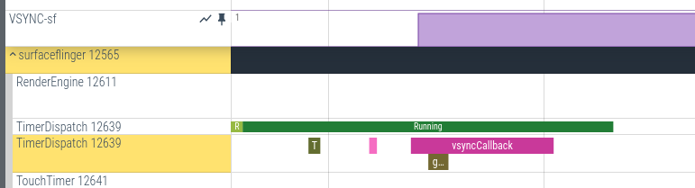
void MessageQueue::Handler::dispatchFrame(VsyncId vsyncId, TimePoint expectedVsyncTime) {
if (!mFramePending.exchange(true)) {
mVsyncId = vsyncId;
mExpectedVsyncTime = expectedVsyncTime;
mQueue.mLooper->sendMessage(sp<MessageHandler>::fromExisting(this), Message());
}
}
dispatchFrame 方法主要做了下面两件事情：
- 保存 VSyncId。
- 调用 MessageQueue 的 Looper，发送消息。
在 Handler 的 sendMessage 方法中，最终会回调 Handler 的 handleMessage 方法。
void MessageQueue::Handler::handleMessage(const Message&) {
mFramePending.store(false);
mQueue.onFrameSignal(mQueue.mCompositor, mVsyncId, mExpectedVsyncTime);
}
由于 Scheduler 继承了 MessageQueue，因此在 Handler 的 handleMessage 方法的内部，会调用 Scheduler 的 onFrameSignal 方法。
void Scheduler::onFrameSignal(ICompositor& compositor, VsyncId vsyncId,
TimePoint expectedVsyncTime) {
const TimePoint frameTime = SchedulerClock::now();
// 提交当前以合成的帧
if (!compositor.commit(frameTime, vsyncId, expectedVsyncTime)) {
return;
}
// 提交成功后，合成下一帧
compositor.composite(frameTime, vsyncId);
// 通知有新合成的帧可用
compositor.sample();
}
分别调用 SurfaceFlinger 的相关方法。
- 提交已合成的帧显示在屏幕上。
- 如果提交成功，合成下一帧，并通知有新合成的帧可用。
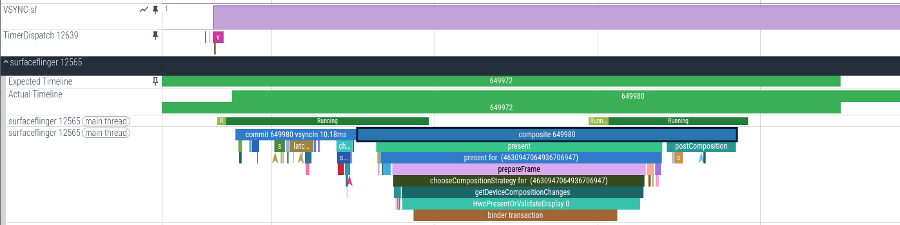
void SurfaceFlinger::composite(TimePoint frameTime, VsyncId vsyncId)
FTL_FAKE_GUARD(kMainThreadContext) {
ATRACE_FORMAT("%s %" PRId64, __func__, vsyncId.value);
}
bool SurfaceFlinger::commit(TimePoint frameTime, VsyncId vsyncId, TimePoint expectedVsyncTime)
FTL_FAKE_GUARD(kMainThreadContext) {
ATRACE_FORMAT("%s %" PRId64 " vsyncIn %.2fms%s", __func__, vsyncId.value,
ticks<std::milli, float>(mExpectedPresentTime - TimePoint::now()),
mExpectedPresentTime == expectedVsyncTime ? "" : " (adjusted)");
}
void SurfaceFlinger::sample() {
if (!mLumaSampling || !mRegionSamplingThread) {
return;
}
mRegionSamplingThread->onCompositionComplete(mScheduler->getScheduledFrameTime());
}
VSYNC-app的申请与分发
回调注册
App 和 sf 连接的注册
VSync-app用于控制App的UI渲染。
如果有 App 关心 VSYN-APP，则需要向 appEventThread 注册 Connection，可能有多个 App 同时关注 VSYNC-app 信号，所以在 EventThread 的内部有一个 mDisplayEventConnections 来保存着Connection，Connection是一个Bn对象，因为要与APP进行binder通讯。
App 进程：
new Choreographer()
new FrameDisplayEventReceiver
DisplayEventReceiver.nativeInit
----> jni
NativeDisplayEventReceiver::nativeInit()
new NativeDisplayEventReceiver
DisplayEventDispatcher::DisplayEventDispatcher()
new DisplayEventReceiver()
// 建立和 SF 的连接
ISurfaceComposer.createDisplayEventConnection() ----> SF 进程
IDisplayEventConnection::stealReceiveChannel
DisplayEventDispatcher::initialize()
mLooper->addFd(mReceiver.getFd(), 0, Looper::EVENT_INPUT, this, NULL)
其中 FrameDisplayEventReceiver 继承自 DisplayEventReceiver。它的主要作用就是创建一个socket以及对应的文件，然后实现和SurfaceFlinger的双向通讯。
NativeDisplayEventReceiver 继承自 DisplayEventDispatcher。
status_t DisplayEventDispatcher::initialize() {
status_t result = mReceiver.initCheck();
......
// 往 Looper 里面添加一个描述符，就是让 Looper 一起监听事件
// DisplayEventDispatcher 继承了 LooperCallback
// this 表示 LooperCallback，表示当 fd 有可读数据时会触发 DisplayEventDispatcher::handleEvent
if (mLooper != nullptr) {
int rc = mLooper->addFd(mReceiver.getFd(), 0, Looper::EVENT_INPUT, this, NULL);
if (rc < 0) {
return UNKNOWN_ERROR;
}
}
return OK;
}
上面方法中 mReceiver 是 DisplayEventReceiver 对象：
DisplayEventReceiver::DisplayEventReceiver(gui::ISurfaceComposer::VsyncSource vsyncSource,
EventRegistrationFlags eventRegistration,
const sp<IBinder>& layerHandle) {
//连接SurfaceFlingerAIDL的binder
sp<gui::ISurfaceComposer> sf(ComposerServiceAIDL::getComposerService());
if (sf != nullptr) {
mEventConnection = nullptr;
// 调用 createDisplayEventConnection，实例化 mEventConnection
binder::Status status =
sf->createDisplayEventConnection(vsyncSource,
static_cast<
gui::ISurfaceComposer::EventRegistration>(
eventRegistration.get()),
layerHandle, &mEventConnection);
if (status.isOk() && mEventConnection != nullptr) {
mDataChannel = std::make_unique<gui::BitTube>();
status = mEventConnection->stealReceiveChannel(mDataChannel.get());
......
}
}
int DisplayEventReceiver::getFd() const {
if (mDataChannel == nullptr) return mInitError.has_value() ? mInitError.value() : NO_INIT;
return mDataChannel->getFd();
}
sf 进程：
SurfaceComposerAIDL::createDisplayEventConnection
Scheduler::createDisplayEventConnection
EventThread::createEventConnection
EventThreadConnection::onFirstRef()
EventThread::registerDisplayEventConnection(
mDisplayEventConnections.push_back(connection);
EventThreadConnection::stealReceiveChannel
// 设置 FD，后面就可以通过socket进行通信了
BitTube::setReceiveFd()
BitTube::setSendFd()
应用通过Choreographer这个对象去申请Vsync-app的信号，然后通过其内部类 FrameDisplayEventReceiver 来接受 vsync 信号，也就是Vsync-app的发射最后到这个对象里面，来触发app刷新，核心就是FrameDisplayEventReceiver类，这个类的初始化在是Choreographer的构造函数中。
Vsync 信号回调的注册
当 Vsync 生成时，不管sf还是app都会调用 VSyncDispatchTimerQueue::timerCallback()，但是这里面分别注册了不同的回调函数用于不同类型 Vsync 的回调。关于 app-vsync 这部分的回调在前面线程初始化的部分已经讲过了：
在EventThread在创建 VSyncCallbackRegistration 时，绑定了 EventThread::onVsync 方法，所以后面有 Vsync 信号来的时候会调用到这个方法。
EventThread::EventThread(const char* name, std::shared_ptr<scheduler::VsyncSchedule> vsyncSchedule,
android::frametimeline::TokenManager* tokenManager,
IEventThreadCallback& callback, std::chrono::nanoseconds workDuration,
std::chrono::nanoseconds readyDuration)
: mThreadName(name),
mVsyncTracer(base::StringPrintf("VSYNC-%s", name), 0),
mWorkDuration(base::StringPrintf("VsyncWorkDuration-%s", name), workDuration),
mReadyDuration(readyDuration),
mVsyncSchedule(std::move(vsyncSchedule)),
mVsyncRegistration(mVsyncSchedule->getDispatch(), createDispatchCallback(), name),
scheduler::VSyncDispatch::Callback EventThread::createDispatchCallback() {
return [this](nsecs_t vsyncTime, nsecs_t wakeupTime, nsecs_t readyTime) {
onVsync(vsyncTime, wakeupTime, readyTime);
};
}
VSYNC-app的申请
先来结合 Perfetto 来看一下流程：
SurfaceFlinger 第一次 requestNextVsync 时会开启硬件校准。
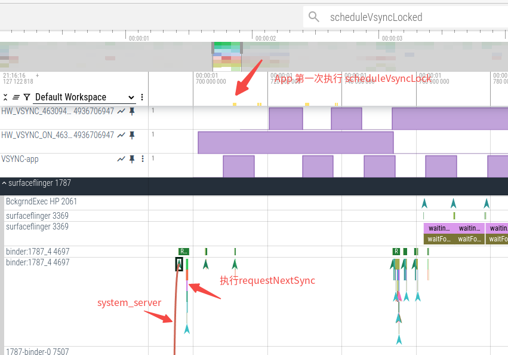
第一次 requestNextVsync 是从 system_server 处理触摸事件时调过来的。
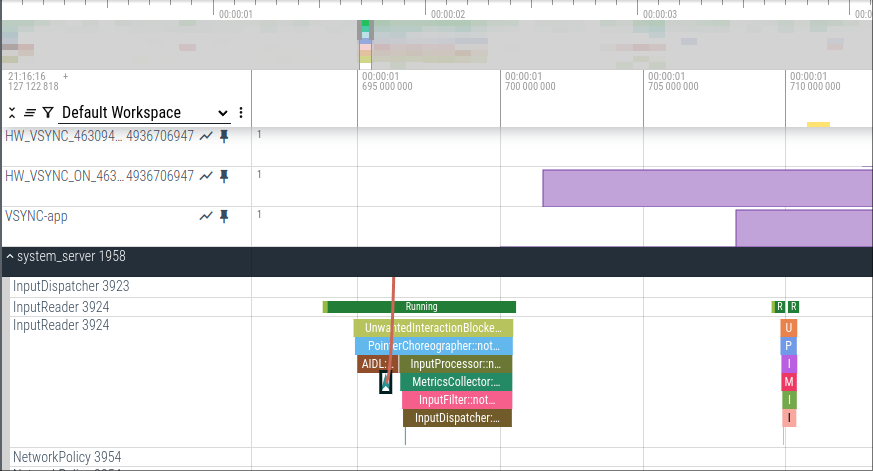
app 执行 Choreographer#scheduleVsyncLocked 方法跨进程调用到Surfaceflinger端的 requestNextVsync 方法:
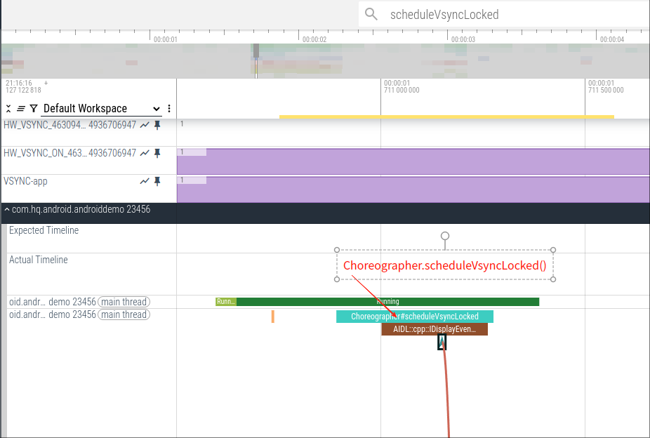
surfaceflinger作为服务端如下:
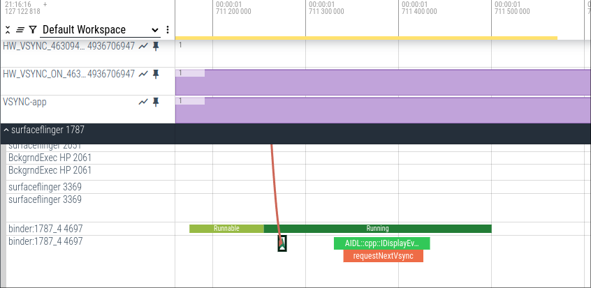
有界面更新请求，请求 Vsync：
ViewRootImpl.scheduleTraversals()
// 申请并 监听VSYNC信号，下一次VSYNC信号到来时，执行给进去的mTraversalRunnable
Choreographer.postCallback(Choreographer.CALLBACK_TRAVERSAL, mTraversalRunnable)
Choreographer.postCallbackDelayed()
Choreographer.postCallbackDelayedInternal()
mCallbackQueues.addCallbackLocked
Choreographer.scheduleFrameLocked
Choreographer.scheduleVsyncLocked()
DisplayEventReceiver.scheduleVsync()
DisplayEventReceiver.nativeScheduleVsync()
------ jni -----
android_view_DisplayEventReceiver.nativeScheduleVsync
DisplayEventDispatcher::scheduleVsync()
DisplayEventReceiver::requestNextVsync()
IDisplayEventConnection.mEventConnection->requestNextVsync() --> surfaceFlinger
// 如果需要立即执行，就不用等下个 Vsync
Handler.obtainMessage(MSG_DO_SCHEDULE_CALLBACK, action)
surfaceFlinger 进程：
EventThreadConnection::requestNextVsync()
EventThread::requestNextVsync()
Scheduler::resync()
// 开启HW-Vsync对SW-Vsync信号的校准
Scheduler::resyncAllToHardwareVsync()
Scheduler::resyncToHardwareVsyncLocked()
// 修改 VSyncRequest::Single
EventThreadConnection->vsyncRequest = VSyncRequest::Single;
// 唤醒 EventThread::threadMain
mCondition.notify_all()
EventThread::threadMain()
VSyncCallbackRegistration::schedule()
VSyncDispatchTimerQueue::schedule()
VSyncDispatchTimerQueue::scheduleLocked()
VSyncDispatchTimerQueueEntry::schedule()
// 计算下一次VSync信号的发送时间。
// 具体的计算方法前面有介绍
VSyncPredictor::nextAnticipatedVSyncTimeFrom
// 设置定时器发送下一次 Vsync 信号
VSyncDispatchTimerQueue::rearmTimerSkippingUpdateFor()
VSyncDispatchTimerQueue::setTimer()
// 设置定时器并设置定时触发回调函数
Timer::alarmAt(VSyncDispatchTimerQueue::timerCallback)
// 进入等待状态，当Vsync信号到来时被唤醒进行 Vsync 信号分发
mCondition.wait_for()
应用要申请Vsync信号，都是通过Choregrapher对象调用postFrameCallback方法，而应用在绘制的时候也会调用这个方法，就是ViewRootImpl中的scheduleTraversals方法，其实在函数实现中也是调用了Choregrapher的postFrameCallback方法。
binder::Status EventThreadConnection::requestNextVsync() {
// 原生 Trace
ATRACE_CALL();
mEventThread->requestNextVsync(sp<EventThreadConnection>::fromExisting(this));
return binder::Status::ok();
}
void EventThread::requestNextVsync(const sp<EventThreadConnection>& connection) {
ATRACE_NAME(mThreadName);//添加打印把主要线程名字打出到Trace中
if (connection->resyncCallback) {
connection->resyncCallback();
}
std::lock_guard<std::mutex> lock(mMutex);
// 第一次请求的时候 connection->vsyncRequest == VSyncRequest::None，进入如下逻辑，
// 使得该连接的vsyncRequest = VSyncRequest::Single
if (connection->vsyncRequest == VSyncRequest::None) {
connection->vsyncRequest = VSyncRequest::Single;
// 唤醒EventThread::threadMain()
mCondition.notify_all();
} else if (connection->vsyncRequest == VSyncRequest::SingleSuppressCallback) {
// 如果是 SingleSuppressCallback，代表前一次刚刚已经进入vsync,准备进入停止回调状态
// 那么只修改 vsyncRequest 状态，不唤醒 EventThread::threadMain()
// 这里可能有疑问，不唤醒EventThread::threadMain()怎么来产生 vsync 信号呢
// 后面在分发流程中会介绍，当EventThread::threadMain()完成一次Vsync信号分发后，会调用 schedule() 再次生成一个 Vsync信号
connection->vsyncRequest = VSyncRequest::Single;
}
}
当前的申请Vsync-app的Connection的vsyncRequest赋值为 VsyncRequest::Single。
我们在 EventThread::requestNextVsync 添加了 Trace 打印，在 Perfetto 中看看对应的情况。
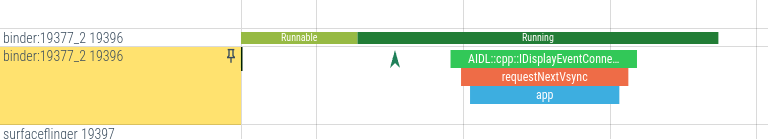
上图展示了在对应的 EventThread 中申请了 App Vsync 信号。
EventThread 的线程函数 threadMain() 中进行循环调用，一方面检测是否有 Vsync 信号发送过来了 mPendingEvent，一方面检查是否有 app 请求了 Vsync 信号，如果有 Vsync 信号，而且有app请求了 Vsync，则通过Connection把Vsync事件发送到对端。
VSYNC-app的分发
当有VSYNC信号来临时，native 层会回调 DisplayEventReceiver 的 dispatchVsync 方法:
VSyncDispatchTimerQueue::timerCallback()
VSyncDispatchTimerQueueEntry::callback
VSyncDispatch::Callback (实际调用 EventThread::onVsync)
// 创建 Event
DisplayEventReceiver::Event makeVSync()
// 放到mPendingEvents中，在 EventThread::threadMain 中取用
mPendingEvents.push_back()
// 唤醒 EventThread::threadMain
mCondition.notify_all()
前面在EventThread在创建 VSyncCallbackRegistration 时，绑定了 EventThread::onVsync 方法，所以这里的VSyncDispatch::Callback对应的是EventThread的onVsync方法。
EventThread::threadMain
// 判断是否需要消费这个事件
// 在这里修改 connection->vsyncRequest 状态
EventThread::shouldConsumeEvent()
case VSyncRequest::Single -> connection->vsyncRequest = VSyncRequest::SingleSuppressCallback;
case VSyncRequest::SingleSuppressCallback -> connection->vsyncRequest = VSyncRequest::None;
EventThread::dispatchEvent
EventThreadConnection::postEvent()
DisplayEventReceiver::sendEvents()
BitTube::sendObjects
// 写入事件
BitTube::write
// 再次申请一次 Vsync 信号
VSyncCallbackRegistration::schedule()
// 进入等待状态，当Vsync信号到来时被唤醒进行 Vsync 信号分发
mCondition.wait_for()
ssize_t BitTube::write(void const* vaddr, size_t size) {
ssize_t err, len;
do {
len = ::send(mSendFd, vaddr, size, MSG_DONTWAIT | MSG_NOSIGNAL);
// cannot return less than size, since we're using SOCK_SEQPACKET
err = len < 0 ? errno : 0;
} while (err == EINTR);
return err == 0 ? len : -err;
}
sf 分发 Vsync 信号到App进程是通过 Socket 进行通信的，通过调用系统函数send向与消费者关联的文件描述符FD发送信号，于是完成Vsync向应用端的分发，分发的消息在 DisplayEventReceiver.dispatchVsync 方法中处理。
当 sf 端写入事件时 ，App 端的执行流程：
DisplayEventDispatcher::handleEvent
NativeDisplayEventReceiver::dispatchVsync
-------> Java 端
DisplayEventReceiver.dispatchVsync
DisplayEventReceiver.dispatchVsync
Choreographer.FrameDisplayEventReceiver.onVsync
Message msg = Message.obtain(mHandler, this);
Handler.sendMessageAtTime
FrameDisplayEventReceiver.run()
Choreographer.doFrame
Choreographer.doCallbacks
Choreographer.CallbackRecord.run
ViewRootImpl.TraversalRunnable.run
ViewRootImpl.doTraversal()
ViewRootImpl.performTraversals()
具体它们的关联的建立过程，请参考前面回调注册一节。
前面就介绍了一次完整的 app-vsync 信号的申请与分发，在这个过程中我们提到了，当 EventThread::threadMain 分发 vsync 时会再次申请一次 vsync 信号，那么是不是 vsync 信号就会一直无休止的申请和分发下去呢？那当然不是的。
当app第一次申请分发app-vsync结束后，接下来将会有两种情况：
- app接着申请app-vsync
- app不再申请app-vsync
当app接着申请app-vsync时，前面介绍过，在 EventThread::requestNextVsync 方法中，因为此时满足 (connection->vsyncRequest == VSyncRequest::SingleSuppressCallback) 条件，那么就只是把 connection->vsyncRequest = VSyncRequest::Single;，不会再次唤醒线程，等前面申请的 vsync 到的时候再向 app 分发，如此循环往复。
当 app不再申请app-vsync时，那么EventThread::requestNextVsync 就不会再次调用，connection->vsyncRequest 的状态就不会由 VSyncRequest::SingleSuppressCallback 切换到 VSyncRequest::Single 了。
void EventThread::requestNextVsync(const sp<EventThreadConnection>& connection) {
ATRACE_NAME(mThreadName);//添加打印把主要线程名字打出到Trace中
mCallback.resync();
std::lock_guard<std::mutex> lock(mMutex);
if (connection->vsyncRequest == VSyncRequest::None) {
connection->vsyncRequest = VSyncRequest::Single;
mCondition.notify_all();
} else if (connection->vsyncRequest == VSyncRequest::SingleSuppressCallback) {
connection->vsyncRequest = VSyncRequest::Single;
}
}
那么在最后一次 vsync 信号到来时，在 shouldConsumeEvent 方法中会把 vsyncRequest 状态从 SingleSuppressCallback 改为 VSyncRequest::None。
bool EventThread::shouldConsumeEvent(const DisplayEventReceiver::Event& event,
const sp<EventThreadConnection>& connection) const {
case DisplayEventReceiver::DISPLAY_EVENT_VSYNC:
switch (connection->vsyncRequest) {
case VSyncRequest::None:
return false;
case VSyncRequest::SingleSuppressCallback:
connection->vsyncRequest = VSyncRequest::None;
return false;
case VSyncRequest::Single: {
if (throttleVsync()) {
return false;
}
connection->vsyncRequest = VSyncRequest::SingleSuppressCallback;
return true;
}
再最后一次设置的定时器到时，在 EventThread::threadMain 方法中，由于vsyncRequested变为false，就不会继续申请 vsync信号，而且会设置 mState = State::Idle。
void EventThread::threadMain(std::unique_lock<std::mutex>& lock) {
.......
bool vsyncRequested = false;
// Find connections that should consume this event.
auto it = mDisplayEventConnections.begin();
while (it != mDisplayEventConnections.end()) {
if (const auto connection = it->promote()) {
if (event && shouldConsumeEvent(*event, connection)) {
consumers.push_back(connection);
}
// connection->vsyncRequest == VSyncRequest::None，vsyncRequested 为false
vsyncRequested |= connection->vsyncRequest != VSyncRequest::None;
++it;
} else {
it = mDisplayEventConnections.erase(it);
}
}
if (!consumers.empty()) {
dispatchEvent(*event, consumers);
consumers.clear();
}
// 由于 vsyncRequested 为 false，这里把 mState 设置为 State::Idle
if (mVSyncState && vsyncRequested) {
mState = mVSyncState->synthetic ? State::SyntheticVSync : State::VSync;
} else {
ALOGW_IF(!mVSyncState, "Ignoring VSYNC request while display is disconnected");
mState = State::Idle;
}
// 这里就不再继续申请 Vsync 信号
if (mState == State::VSync) {
const auto scheduleResult =
mVsyncRegistration.schedule({.workDuration = mWorkDuration.get().count(),
.readyDuration = mReadyDuration.count(),
.lastVsync = mLastVsyncCallbackTime.ns()});
LOG_ALWAYS_FATAL_IF(!scheduleResult, "Error scheduling callback");
} else {
// 取消定时器
mVsyncRegistration.cancel();
}
相关文章
SurfaceFlinger模块-VSYNC研究：https://www.jianshu.com/p/5e9c558d1543
VSync信号系统与SurfaceFlinger :https://juejin.cn/post/7371642257797038091
彻底掌握 Android14 Vsync 原理 :https://mp.weixin.qq.com/s/6RXEpIkhd9j7f4Our5P8-w
VSync信号系统与SurfaceFlinger :https://blog.csdn.net/LeeDuoZuiShuai/article/details/139046513
Andoid SurfaceFlinger(二) VSYNC的开始，连续，结束：https://blog.csdn.net/qq_41095045/article/details/136378829
App/Sf的Vsync部分源码流程结合perfetto/systrace分析：https://blog.csdn.net/liaosongmao1/article/details/136139562